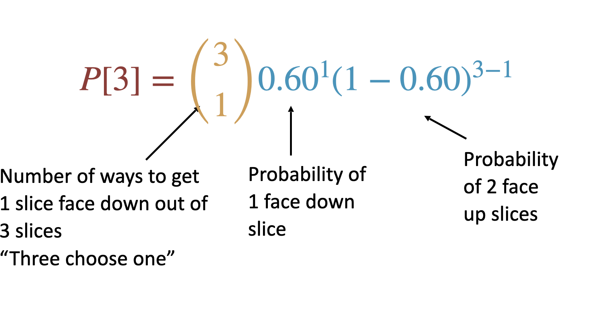
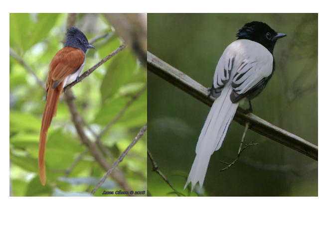
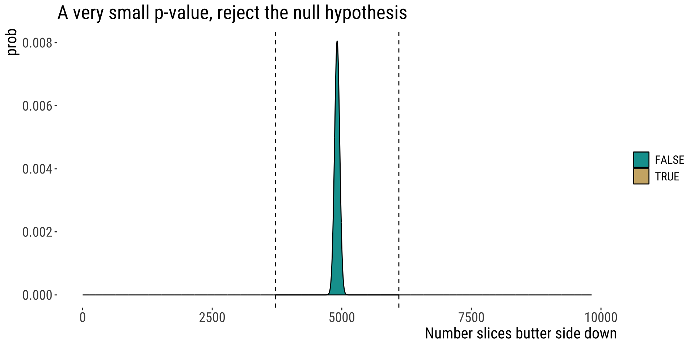

6.2. Analysing proportions
The binomial test
2025-11-17
Key learning goals
- Explain probabilities and proportions. Which is the parameter? Which is the estimate?
- Explain the binomial. When would you use it?
- Understand the binomial distribution and connect it to simple probability rules.
- Quantify the expected mean and variability of a binomial distribution.
- Be able to appropriately conduct and interpret a binomial test.
Proportions
A proportion is the fraction of individuals having a particular attribute. i.e. # successes divided by # trials
A proportion is also the probability that any an individual randomly sampled from that population will have that attribute
Example: Murphy’s Law
Researchers found that 6101 of the 9821 slices of toast thrown in the air landed butter side down. What proportion of the slices landed butter side down? Is the deck stacked against us?
How would you test this?
From proportions to the binomial
Let’s use this estimated proportion as our best estimate for the true probability of landing butter side down. To make the math a little easier, let’s assume that the true probability that toast falls butter side down is 60%.
Question: If three people drop their slice of toast, what is the probability that one falls butter side down and two fall butter side up?
HINT: Draw trees… Work on this for a few minutes
From proportions to the binomial
First, draw a tree

From proportions to the binomial
Then, work out probabilities

From proportions to the binomial
Finally, count the ways to get the desired outcome

From proportions to the binomial
Add up probabilities
\(3 \times (2/5\times 2/5\times 3/5)=0.288\)
THIS IS OLD NEWS FOR YOU, SO WHAT ELSE IS NEW?

THERE’S AN EASIER WAY: THE BINOMIAL DISTRIBUTION
The Binomial Distribution: Idea
The probability of a given number (X) of “successes” from a fixed number of n independent trials.
E.g. If three people drop their slice of toast, what is the probability that one falls butter side down and two fall butter side up?
Probability of Successes
Of \(n\) independent trials, each with probability of success \(p\), the probably of \(X\) successes is given by:
\[P[X]=\binom {n}{X}p^X(1-p)^{n-X}\]
Let’s look at these parts separately
Probability of Successes
\(\binom{n}{X}\): Binomial coefficient: describes the number of ways to get X successes in \(n\) trials.
\(\binom {n}{X}=\frac{n!}{X!(n-X)!}\)
\(n!=n\times (n-1) \times (n-2) ...\times 2 \times 1\)
E.g. how many ways are there to toss 3 coins and get 1 tails.
\[\binom {3}{1}=\frac{3!}{1!(2)!}\] \[\binom {3}{1}=3\]
Probability of successes
\(P[X]\): The probability of observing \(X\) successes in \(n\) trials EQUALS
\(\binom{n}{X}\): # ways to get \(X\) successes from \(n\) trials TIMES
\(p^X(1-p)^{n-X}\): The probability of \(X\) successes and by \(n – X\) failures
So back to our toast example
Assume that the true probability that toast falls butter side down is 60%.
Question: If three people drop their slice of toast, what is the probability that one falls butter side down and two fall butter side up?
Step 1: binomial coefficient
\(\binom {n}{X}=\frac{n!}{X!(n-X)!}\)
\(\binom {3}{1}=\frac{3!}{1!(3-1)!}=\frac{3\times 2}{2}=3\)
In R:
Toast example (cont.)
Step 2: The probability of \(X\) successes and \(n-X\) failures
\(p^X(1-p)^{n-X}\)
\(0.60\times(1-0.60)^{3-1}=0.60\times 0.40^2=0.096\)
Putting it all together:
\(P[\text{1 successes}]=3\times0.096=0.288\)

Toast example (in R)
“Manually”:
Dedicated function:
More problems!
Problem 2: A population of paradise flycatchers
The population has 80% brown males and 20% white.You capture 5 male flycatchers at random. What is the chance that 3 of those are brown and 2 are white?
\(P[X]=\binom {n}{X}p^X(1-p)^{n-X}\)
\(\binom {n}{X}=\frac{n!}{X!(n-X)!}\)
[work on this for a few minutes]

Problem 2: Solution
\(P[X]=\binom {n}{X}p^X(1-p)^{n-X}\)$
\(\binom {n}{X}=\frac{n!}{X!(n-X)!}\)
\(\binom {n}{X}=\frac{5!}{3!(2)!}\)
\(P[2]=\frac{120}{12}\times 0.8^X(1-0.8)^{5-3}\)
\(=19 \times (0.8)^3\times (0.2)^2\)
\(=0.205\)
Problem 2: Solution in R
In R
Or:
Problem 2: Solution in R
The binomial test
Testing \(H_0\) that \(\hat p\) comes
from a population with proportion \(p_0\)
Example: the toast is back!
Researchers found that 6101 of the 9821 slices of toast thrown in the air landed butter side down.
What is the probability that we would see a result this or more extreme if toast has a fifty-fifty chance of landing butter side down?
State the hypotheses
Let’s define butter side down as a “success”
Null hypothesis (\(H_{0}\)):
The sample proportion comes from a population with a probability of success equal to \(p_0=0.5\).
Alternate hypothesis (\(H_{A}\)):
The sample proportion comes from a population with a probability of success \(\neq p_0\).
Calculate test statistic:
\(p_0 = .5\), \(n = 9821\), \(X = 6101\)
\(\hat p=\frac{X}{n}=\frac{6101}{9821}=0.62\)
Generate the null & Find P-value
Actually calculating P-value would look like this
\(9821-6101=3719\)
Two-tailed P-value:
\(p = \sum_{X = 6101}^{X = 9821} {9821 \choose X} .5^X (.5)^{9821-X}\)
\(+\)
\(\sum_{X = 0}^{X = 3719} {9821 \choose X} .5^X (.5)^{9821-X}\)
We conducted a Binomial Test!
We reject \(H_0\) & conclude that toast is more likely to land butter side down than not
👏 Congrats 👏 You already conducted a hypothesis test!

R can make this even easier
butter.down <- 6101
slices <- 9821
prop.down <- butter.down/slices
#
binom.test(x = butter.down, n = slices, p = 0.5, alternative = "two.sided")
##
## Exact binomial test
##
## data: butter.down and slices
## number of successes = 6101, number of trials = 9821, p-value < 2.2e-16
## alternative hypothesis: true probability of success is not equal to 0.5
## 95 percent confidence interval:
## 0.6115404 0.6308273
## sample estimates:
## probability of success
## 0.6212198
# doing it 'manually'
sum(dbinom(6101:9821, size = 9821, prob = 0.5)) + sum(dbinom(1:((9821 - 6101) + 1),
size = 9821, prob = 0.5))
## [1] 1.390148e-128Properties of the binomial distribution
Expected # successes of n trials
Expected successes in \(n\) trials
\[\Huge{\mu = n \times p}\]
\(\mu\): That’s right. Mean number of successes, aka, expected number of successes.
Binomial: Variability and Uncertainty
For counts:
\[\text{population variance: } \sigma^2 = n \times p \times(1-p)\]
\[\text{sample variance: }s^2 = n\times \hat p \times(1-\hat p)\]
Properties of proportions: expectations
If there are \(X\) successes in \(n\) trials in a random sample, then the
estimated proportion of successes is:
\[\hat p = \frac{X}{n}\]
\(\hat p\): The hat signals that this is an estimate
\(p\): The expected proportion of successes is the probability of success p

B215: Biostatistics with R